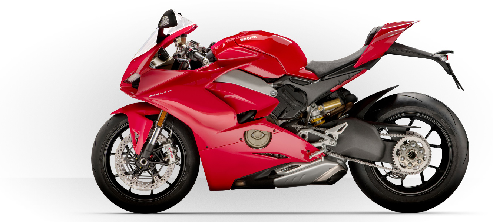

The Legend of Ducati
Ducati. Italian Passion.

EICMA 2017 visitors award the Ducati Panigale V4 "Most Beautiful Bule of Show"
A new challenge: defying the top riders in MotoGP. In 2007 Stoner led Ducati on the top of the World For Ducati, the major racing challenge of the last few years is the MotoGP, the most competitive two-wheeler championship. The moment of glory arrived in 2007, when Ducati won with Casey Stoner its first world championship.
The rise of the World SBK championship was an ideal venue to showcase the potential of the bikes The championship was won for the first time in 1990 by Raymond Roche on a further developed model of the same motorcycle, the 888. The same bike also won the following two years with Doug Polen
The birth of the model from which all of today’s Ducati models are derived Pantah: the model that marked the transition from bevel engines, to engines with belt timing, the solution that is still in use in most of the Ducati production range today.
The Taglioni revolution: “L” twin-cylinder and a desmodromic timing system Ducati’s “Rebirth” coincides with the development of the bevel gear twin-cylinder engines that Mr Taglioni had begun to design in the late 1960s
The company’s participation in the races had ceased, but private riders kept the racing spirit alive The company, which had become state-owned, began dealing with the design of bikes for mass production, while the racing department continued its work selling specially developed models to private riders.
Single-cylinder, single overhead camshaft: first real racing bike was developed by Fabio Taglioni The “Marianna Phase” coincides with an Italian passion for long-distance racing, such as the Motogiro, which consisted of a series of stages held throughout Italy, and the Milano-Taranto race.
IThe company began manufacturing motorcycles, and there was no shortage of riders It was obvious from the very beginning. Riding a Ducati was not merely a sport. It was a state of mind. And the first pioneers were driven by something more than enthusiasm alone.